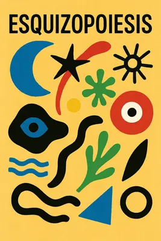
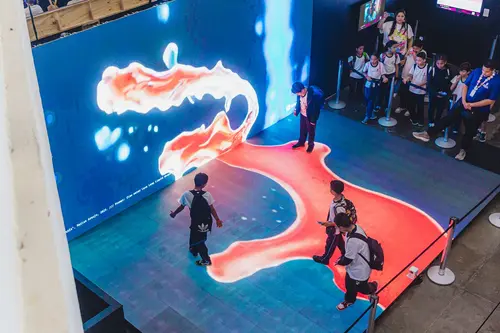

"O universo não é uma ideia minha.
A minha ideia de universo é que é uma ideia minha.
A noite não anoitece pelos meus olhos.
A minha ideia de noite é que anoitece pelos meus olhos.
Fora de eu pensar e de haver quaisquer pensamentos
A noite anoitece concretamente
E o fulgor das estrelas existe como se tivesse peso."
— Alberto Caeiro (Fernando Pessoa)
Neste mês de agosto, a cidade do Rio de Janeiro recebeu o Rio Innovation Week, um festival de encontros, conversas e palestras que, como o nome em inglês já denuncia, trata de inovação em áreas que vão de saúde a políticas públicas. E, claro, com muita arte e tecnologia na pauta.
Quando ganhei meu passaporte para os quatro dias de evento, o clima estava frio e nublado, eu estava gripado, e confesso: a ideia de me juntar a uma enorme plateia em um galpão fechado para ouvir influenciadores digitais discutirem sobre as mais novas
Buzzwords do momento não me animava. De influenza já bastava a que estava instalada nos meus brônquios. Então, nem olhei com atenção a extensa programação. Sabia apenas que haveria muita Inteligência Artificial associada aos mais diversos temas.
No entanto, na terça-feira, quando o evento começou, o sol voltou, a dipirona fez o seu trabalho, e eu acordei animado com a possibilidade de deparar com o novo. Peguei o metrô, depois o VLT e, chegando no Pier Mauá, uma ótima surpresa: havia um palco exclusivo sobre o mercado da música, Music Forwad, promovido pelos ídolos da Tecla Music. Dali não saí mais. Voltei todos os quatro dias seguintes. Foi intenso: conheci pessoas e trabalhos que eu nem imaginava, fiz contatos novos e, ao final, tive uma epifania que resultou na criação de uma palavra: Esquizopoiesis.

Um termo que define o rompimento entre o impulso de criação e o seu criador. Uma palavra que, ouso dizer, poderá ser muito usada daqui para frente — caso este artigo viralize. Estou orgulhoso. Não é todo dia que alguém que não se chama Guimarães Rosa ou Carlinhos Brown inventa uma palavra nova decente.
Mas longe de mim querer assumir os louros sozinho. Ninguém cria sozinho. Eu estive exposto a uma série de ideias, de pessoas, que me fizeram refletir até chegar a esta conclusão. Diferente da OpenAI, que não cita suas fontes, eu consigo atribuir o devido crédito a quem me inspirou nesses dias. E faço questão de citar as palestras que mais me marcaram:
Visual Flow: Programação visual em tempo real com TouchDesigner – Marlus Araújo
Adorei conhecer o TouchDesigner, um software de programação visual semelhante ao Max/MSP, conhecido por nós músicos. Foi um teletransporte direto para minha época de faculdade, nas aulas de composição eletroacústica com Mauricio Dottori: geradores, osciladores e filtros combinados para criar o que se chama de arte generativa.

Saí da palestra cheio de ideias para aplicar nos cases dos clientes que usam o nosso Player Moods: vitrines que reagem à presença do público, projeções interativas em chão, teto e parede da loja, e muito mais.
Memória, Música e Inteligência Artificial – Cleber Augusto, Alessandro Couto Cardozo, Ferrugem
Uma história emocionante sobre como utilizaram o aprendizado de máquina para reconstruir a voz de Cleber Augusto em seu mais novo album. Ele próprio dirigiu a interpretação de outros cantores nas suas músicas, e com o software reconstruiram o seu timbre de voz pessoal. Um exemplo único no mundo de como a tecnologia pode potencializar o artista.
Cleber Augusto - Minhas Andanças
Music Forward | 15 anos do Festival Novas Frequências – Chico Dub
Aqui algo totalmente novo para mim. Me senti um idiota por nunca ter ido a uma edição desse festival, mesmo tendo muitas vezes viajado para outros países atrás de novas sonoridades.
Em tempos de atenção fragmentada e produção automatizada de áudio e vídeo, a experiência de shows ao vivo se mostra urgente. Aposto que a overdose de artistas gerados por IA vai banalizar a suposta “sonoridade comum” dos estilos musicais — e o público vai buscar, cada vez mais, novas frequências.
Narrativas Espaciais: design, tecnologia e experiência em projetos imersivos – Débora Marquesi
Em tantos anos trabalhando com marcas, foi a melhor síntese que já vi de como a história a ser contada guia a experiência que uma marca quer passar. Impressionante também a capacidade técnica da equipe da Chrome Garden — os mesmos que fizeram até o palco do 50 Cent. Inteligência real, humana, é o que o Brasil tem de sobra.
Do Som à Imagem: O Projeto Visual da Última Turnê de Gilberto Gil – Fernanda Guizan, Pedro Antonio Garavaglia, Olivia Ribeiro Ferreira, Eduardo Carvalho dos Santos
Sempre que nos deparamos com a obra de Gil, lembramos porque temos orgulho de ser brasileiros. Em nenhuma das grandes turnês globais recentes vi um LED em formato tão único quanto aquele espiral criado para o palco do Gil.
Na hora das perguntas da platéia, tive vontade de levantar a mão e perguntar por que, em tempos de IA, não incluíram Cérebro Eletrônico na playlist. Afinal, a letra já diz tudo sobre criação, sobre poiesis humana — algo que nasce da vida que sabe que um dia vai morrer. Mas deixei minha timidez habitual vencer.
Autores, compositores e algoritmos: criar ainda é humano? – Ricardo Moreno, Pietro Reis, Julia Mestre
Uma discussão fundamental sobre os direitos autorais apropriados pela maioria dos serviços de inteligência artificial generativa. Julia Mestre explicou como a União Brasileira de Compositores busca representatividade no Congresso Nacional para regulamentar essa prática das Big Techs — algo que também acontece em outros países.
Foi aqui o gatilho para este artigo. O tema esteve presente em várias palestras. Notei, na voz de alguns palestrantes que relativizam a apropriação de direitos autorais, uma tendência a classificar a IA como algo “inevitável”. Não é.
A forma sempre antecede o conteúdo. Quem está treinando máquinas com acervos infinitos de livros, músicas e filmes protegidos por direitos autorais, sem pagar nada por isso, são três gigantes da Big Tech. Contra a visão de uma tecnologia neutra e fetichizada, vale citar o excelente artigo O Fetiche da Tecnologia, de Henrique Novaes.
No sábado, após o evento, acordei com dores musculares — talvez resquícios da minha virose recente ou das caminhadas entre sol e ar-condicionado gelado do evento. Tomei dipirona novamente, óleo de CBD, e minha cabeça começou a girar. Uma nuvem de palavras-chave se materializou na minha neve visual: O Cérebro Eletrônico de Gilberto Gil + Inteligência Artificial + sonhos + Sidarta Ribeiro...
Me perguntei se tinha visto Sidarta Ribeiro em algum palco ou se sonhei acordado. Certamente ele já esteve em alguma edição do Rio Innovation Week. Será que as IAs sonham com OvelhasGPTs?
Levantei-me subitamente com uma palavra nova na mente: Esquizopoiesis!
E, magicamente, minha angústia com um futuro distópico dividido entre os data centers de Sam Altman VS. Elon Musk, se dissipou.
A resposta estava no fenômeno que eu acabava de experimentar: pessoas elaborando pensamentos e falas em tempo real, ao vivo. É isso que nós, humanos, temos. E, como Gil sempre soube, o cérebro eletrônico jamais terá.
A inteligência artificial generativa organiza um mosaico de intenções de criação para estruturar suas saídas. Mas essas micropartículas de poiesis, agora pela primeira vez na história separadas de seus criadores, já não possuem mais o fogo que as fazia brilhar.
Não que não tenham utilidade: são ferramentas poderosas. Não que não tenham valor: têm muito. Mas precisamos urgentemente cobrar das Big Techs o pagamento proporcional ao material protegido por direitos autorais do qual elas se alimentam.
Ainda assim, uma arte esquizopoética jamais comunicará sentido real às pessoas. Acredito que a IA generativa será consumida como uma forma de entretenimento em si mesma. O público não vai se interessar em ser fã de bandas geradas por IA. Vai preferir gerar suas próprias bandas — e pagar por esse tipo de entretenimento. Mas os criadores cujas obras alimentaram o aprendizado de máquina são merecedores de todos os royalties a que têm direito.
Como experimento, levei cerca de cinco minutos para gerar uma nova banda no site Suno, pronta para o sucesso comercial:
üëâ https://youtu.be/bscbehcX8cA?si=bnZzsBlzdlFZSMDu
Quem escuta atentamente o resultado tem a estranha sensação de miragem: fragmentos de estilos e vozes parecem emergir como ecos reconhecíveis — ora Maria Rita, ora Emicida, talvez Claudia Leitte ou Vanessa Rangel — mas, assim que se delineiam, logo se desfazem no ar, dissolvidos em outro timbre, em outra fórmula poética. O efeito é um mosaico instável de influências, feito de cintilações que nunca se fixam, justamente porque à máquina falta o núcleo vital da criação.
As big techs poderiam — e, sinceramente, deveriam — colar aos seus serviços um cálculo de quanto cada obra protegida por direitos autorais alimentou os pesos e treinamentos que geraram cada resposta. Parte da grana das mensalidades ia direto para os artistas; outra parte, para educação em arte, garantindo que a próxima geração saiba de onde veio a inspiração. Tipo um regime de royalties do petróleo poético: você extrai, mas tem que devolver algo ao terreno que te alimentou.
Murray Schafer, professor de música canadense que já citei em outro texto, criou no livro O Ouvido Pensante o termo esquizofonia: a separação do som de sua fonte original.
Esse conceito surgiu a partir da invenção dos equipamentos eletroacústicos para transmissão de som, que permitiram gravar e enviar qualquer som para qualquer lugar do mundo. Antes disso, cada som era único, só podia ser ouvido junto de sua fonte.
O século XX, com suas formas industriais de mídia, possibilitou a difusão massiva de criações. Agora, vivemos um novo paradigma: fragmentos de ideias separados de seus criadores compõem uma nova lógica. Mas não pode ser poética, porque só o ser humano — de Prometeu — pode ser.
Diante desse novo paradigma, proponho o termo: esquizopoiesis.
Esquizo – do grego, dividir, separar.
Poiesis – do verbo grego poiein, ação de fazer, criar. É todo agir criativo ou essencial.
Aqui está a nova versão do seu trecho final, agora mais reflexivo e fiel ao que você expressou: com foco na poética humana que persiste independente de tecnologia, ampliado com uma referência apurada ao criador do site Library of Babel, e concluído com a força da letra de “O Cérebro Eletrônico”, de Gilberto Gil.
A experiência com ferramentas de IA generativa ressuscita a sensação do ato de sonhar — tanto em funcionalidade quanto em estética. Podemos simular mundos possíveis, sem objetivo prático — um fim em si mesmo. A arte surrealista tentou traduzir essa lógica fragmentada do onírico; aqui, ela se faz simulação pura.
Esse mesmo impulso aparece no conto “A Biblioteca de Babel”, de Jorge Luis Borges (1941) ([Wikipedia][1]). Na narrativa, a humanidade habita uma biblioteca infinita onde todos os livros possíveis já existem: combinações de símbolos que contêm todas as verdades, todos os erros, todos os livros já escritos e todos os que ainda poderiam ser. Primeiro, o narrador se deslumbra com a promessa de conhecimento absoluto; depois, sucumbe ao peso opressor de um labirinto no qual o sentido se dissolve entre ruídos indistintos.
Hoje, essa metáfora ganha corpo na internet graças ao site libraryofbabel.info, idealizado e implementado por Jonathan Basile, autor e programador de Brooklyn com PhD em Literatura Comparada ([Wikipedia][2], [Biblioteca de Babel][3]). Baseado em algoritmos que geram cada página virtualmente — sem necessidade de armazenamento físico — o site permite o acesso a todas as páginas possíveis de 3 200 caracteres ([Biblioteca de Babel][4]). Ao navegar, você pode tropeçar no texto que já existe — e até naquele que ainda não foi escrito, inclusive tudo o que um dia será. É uma biblioteca esquizopoiesética.
A IA pode recriar a partir de um mosaico de fragmentos de formas poéticas, mas é o humano o único portador possível da poiesis, ainda acendendo — como Prometeu — o fogo que ilumina a escuridão.
E nesse ponto, volto à letra poderosa de Gilberto Gil em “O Cérebro Eletrônico”:
üëâ https://youtu.be/ygu7Np-WRWc
"O cérebro eletrônico faz tudo
Faz quase tudo
Faz quase tudo
Mas ele é mudo
O cérebro eletrônico comanda
Manda e desmanda
Ele é quem manda
Mas ele não anda
Só eu posso pensar
Se Deus existe
Só eu
Só eu posso chorar
Quando estou triste
Só eu
Eu cá com meus botões
De carne e osso
Eu falo e ouço. Hum
Eu penso e posso
Eu posso decidir
Se vivo ou morro porque
Porque sou vivo
Vivo pra cachorro e sei
Que cérebro eletrônico nenhum me dá socorro
No meu caminho inevitável para a morte
Porque sou vivo
Sou muito vivo e sei
Que a morte é nosso impulso primitivo e sei
Que cérebro eletrônico nenhum me dá socorro
Com seus botões de ferro e seus
Olhos de vidro"
— Gilberto Gil
Referências Bibliográficas
-
Pessoa, Fernando. A Little Larger Than the Entire Universe: Selected Poems. Edited and translated by Richard Zenith. Penguin Classics, 2006.
-
Schafer, R. Murray. O Ouvido Pensante. Editora Unesp, 2011 (edição brasileira). Disponível em: PDF.
-
Novaes, Henrique T. O Fetiche da Tecnologia: A Experiência das Fábricas Recuperadas. Editora Expressão Popular, 2007.
-
Borges, Jorge Luis. The Library of Babel. In Ficciones. Grove Press, 1962 (original 1941).
-
Gil, Gilberto. Cérebro Eletrônico. Álbum: Gilberto Gil (1969). Philips Records. Letra disponível em: Letras.mus.br.
-
Ribeiro, Sidarta. The Oracle of Night: The History and Science of Dreams. Pantheon, 2021.
-
Basile, Jonathan. Library of Babel (website). Acessível em: libraryofbabel.info.
-
Rosa, João Guimarães. Obras selecionadas disponíveis em edições como Grande Sertão: Veredas. Nova Fronteira, 1956.